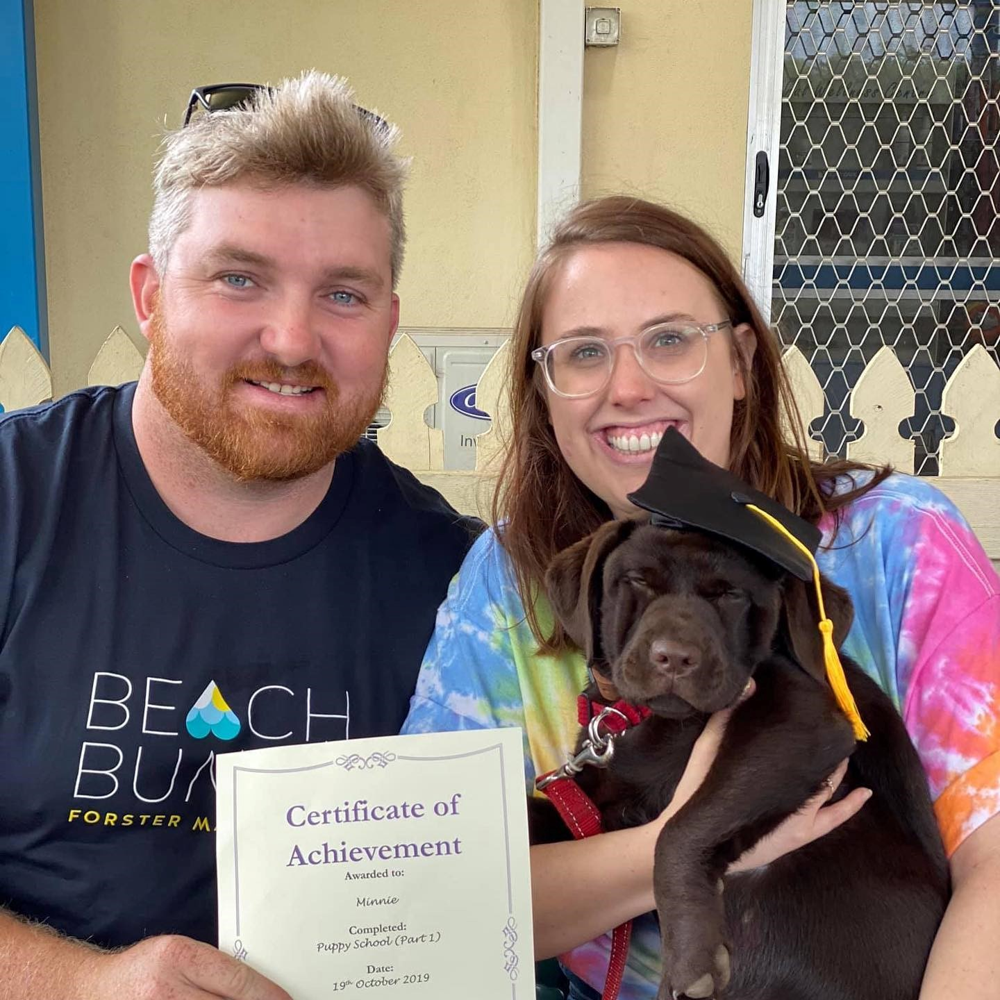

Matthew Bradley Matthew is a supervisor in the road infrastructure industry, his job has given him many opportunities to travel and develop connections across Australia. Matthew loves 4-wheel-driving to remote beaches with his partner and two dogs. His interest in IT stems from his passion for solving problems and increasing efficiency using the latest development in technology. Matthew’s fields of interest within IT are cyber security and robotics, however he is open to all branches of the industry.
Angadh Bazaad Matthew is a supervisor in the road infrastructure industry, his job has given him many opportunities to travel and develop connections across Australia. Matthew loves 4-wheel-driving to remote beaches with his partner and two dogs. His interest in IT stems from his passion for solving problems and increasing efficiency using the latest development in technology. Matthew’s fields of interest within IT are cyber security and robotics, however he is open to all branches of the industry.
Maddison Davis Matthew is a supervisor in the road infrastructure industry, his job has given him many opportunities to travel and develop connections across Australia. Matthew loves 4-wheel-driving to remote beaches with his partner and two dogs. His interest in IT stems from his passion for solving problems and increasing efficiency using the latest development in technology. Matthew’s fields of interest within IT are cyber security and robotics, however he is open to all branches of the industry.
Beau Foster  Matthew is a supervisor in the road infrastructure industry, his job has given him many opportunities to travel and develop connections across Australia. Matthew loves 4-wheel-driving to remote beaches with his partner and two dogs. His interest in IT stems from his passion for solving problems and increasing efficiency using the latest development in technology. Matthew’s fields of interest within IT are cyber security and robotics, however he is open to all branches of the industry.
Matthew is a supervisor in the road infrastructure industry, his job has given him many opportunities to travel and develop connections across Australia. Matthew loves 4-wheel-driving to remote beaches with his partner and two dogs. His interest in IT stems from his passion for solving problems and increasing efficiency using the latest development in technology. Matthew’s fields of interest within IT are cyber security and robotics, however he is open to all branches of the industry.
Cameron Mcnab Matthew is a supervisor in the road infrastructure industry, his job has given him many opportunities to travel and develop connections across Australia. Matthew loves 4-wheel-driving to remote beaches with his partner and two dogs. His interest in IT stems from his passion for solving problems and increasing efficiency using the latest development in technology. Matthew’s fields of interest within IT are cyber security and robotics, however he is open to all branches of the industry.
Kieran Symon Matthew is a supervisor in the road infrastructure industry, his job has given him many opportunities to travel and develop connections across Australia. Matthew loves 4-wheel-driving to remote beaches with his partner and two dogs. His interest in IT stems from his passion for solving problems and increasing efficiency using the latest development in technology. Matthew’s fields of interest within IT are cyber security and robotics, however he is open to all branches of the industry.